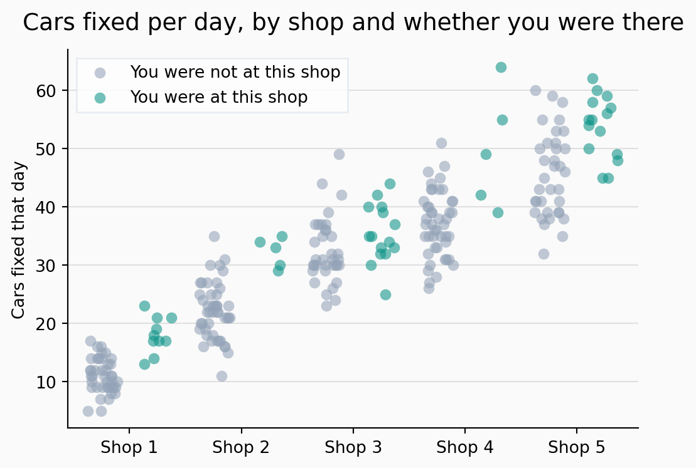
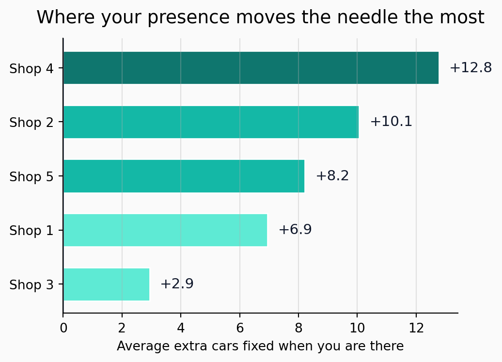
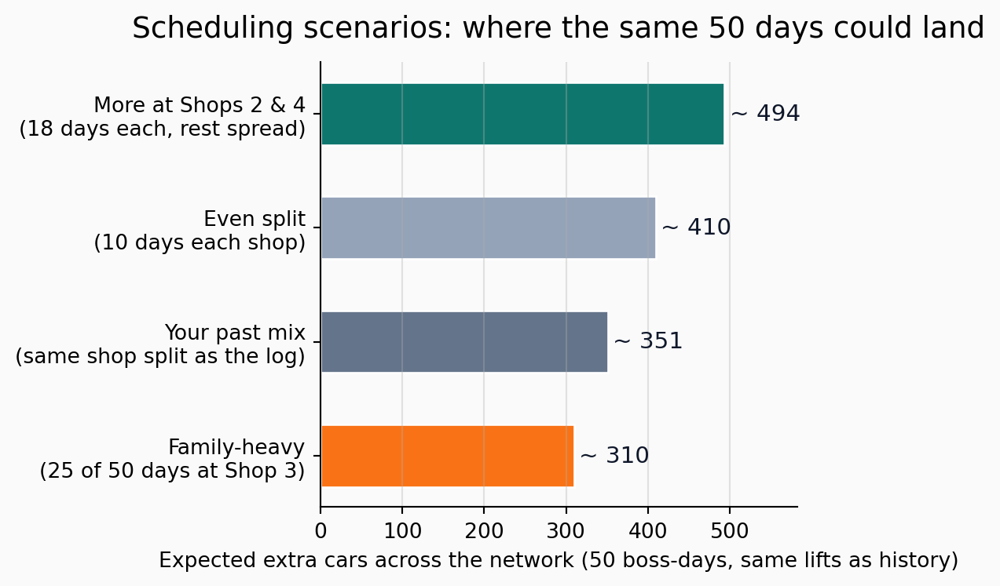

Patrick’s Auto Shop Scheduling Report
Simple decisions to get more cars fixed
Executive recommendation
Based on your 250 recorded shop-days, your best use of time is clear: spend more of your on-site days at Shop 4 and Shop 2. Those two locations show the biggest average jump in cars fixed when you are present.
If you must choose where to go tomorrow, use this order:
- Shop 4
- Shop 2
- Shop 5
- Shop 1
- Shop 3 (still positive, but smallest lift)
This report keeps the analysis practical: what the data says, what to do next week, and how much uncertainty to keep in mind.
1) What the data says
The first chart shows all 250 data points (each dot is one day at one shop), so nothing is hidden.
On average, all shops do better when you are there. But the size of the benefit differs by shop.
The second chart shows that extra lift per day:
- Shop 4: about +12.8 cars/day
- Shop 2: about +10.1 cars/day
- Shop 5: about +8.2 cars/day
- Shop 1: about +7.0 cars/day
- Shop 3: about +2.9 cars/day

2) What you should do
Here is a simple operating rule:
- When possible, place your next visit at Shop 4 or Shop 2
- Use Shop 5 and Shop 1 as secondary choices
- Keep Shop 3 for lower-priority visits (including family reasons), since the performance gain there is smaller
Financially, this is straightforward. If your average ticket is R dollars per car, then one day at Shop 4 adds roughly:
12.8 x R in extra revenue (compared with a day you are not there at Shop 4).
At Shop 3, the same logic is only about:
2.9 x R.
So shifting even a few days from Shop 3 to Shop 4 or Shop 2 can create meaningful additional revenue.
3) How confident to be
These results are useful, but not perfect.
- We only have 250 days total
- For some key shops (especially Shops 2 and 4), the number of “you were there” days is small
- Daily operations vary (staffing, parts delays, unusual big jobs)
So the exact numbers may move up or down, but the ranking is likely the main signal:
Shop 4 and Shop 2 are your highest-leverage visits; Shop 3 is the lowest-leverage visit.
Use this as a decision guide, then track new data monthly and adjust.
4) Future impact under different schedules
The chart below keeps the same 50 total boss-days and changes only how those days are distributed across shops.
It shows a clear pattern:
- Concentrating more days at Shops 2 and 4 produces the highest projected extra cars
- Putting many days at Shop 3 lowers projected total output

Final advice
If you want the shortest version:
- Most days: prioritize Shop 4 and Shop 2
- Some days: rotate to Shop 5 and Shop 1
- Least urgent for productivity lift: Shop 3
This is the highest-probability way to improve output using the same number of days on the road.